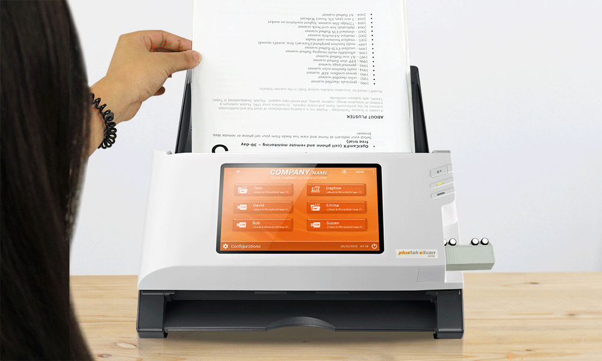
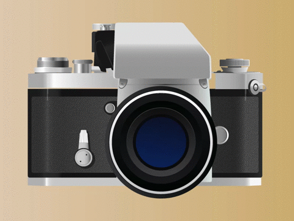
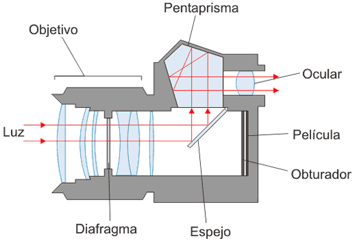

El Escáner

Disfruta de la música mientras exploras este contenido.
Funcionamiento:
Un escáner es un dispositivo que convierte documentos físicos o imágenes en formato digital. Utiliza un sensor de luz para registrar la información óptica a medida que se desplaza sobre el documento o imagen. La luz reflejada se traduce en datos digitales que se almacenan en el ordenador, permitiendo la edición, el almacenamiento y la distribución electrónica de la información.Tipos de escáner:
1. Escáner de cama plana: Coloca el documento o imagen sobre una superficie plana para su escaneo.2. Escáner de alimentación: Alimenta automáticamente hojas de papel a medida que se escanean, ideal para procesar grandes cantidades de documentos.
Tomar en cuenta:
Resolución: La calidad de la imagen escaneada se mide en ppp (puntos por pulgada), determinando la nitidez y los detalles capturados.Profundidad de color: Cuanta más profundidad de color, más detalles y matices puede capturar el escáner, típicamente medida en bits por píxel.
Cámara Fotográfica

Funcionamiento:
Una cámara digital captura imágenes mediante un sensor de imagen (CCD o CMOS). La luz que entra a través del lente golpea el sensor, convirtiendo la luz en señales eléctricas. Estas señales se procesan y almacenan como archivos de imagen digitales, permitiendo su visualización y manipulación electrónica.Características:
* Megapíxeles: Cuanto mayor es el número de megapíxeles, mayor es la resolución de la imagen.* Zoom óptico y digital: El zoom óptico utiliza lentes para acercar la imagen sin pérdida de calidad, mientras que el digital aumenta la imagen, pero puede resultar en pérdida de detalles.
* Estabilización de imagen: Reduce la borrosidad causada por movimientos de la cámara, crucial para capturar fotos nítidas.
